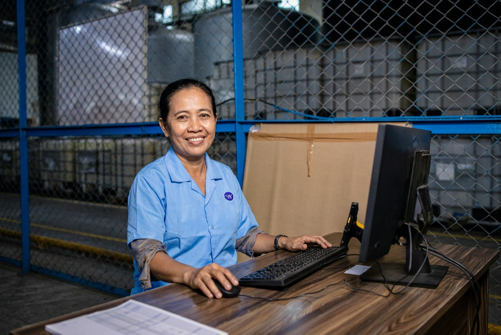
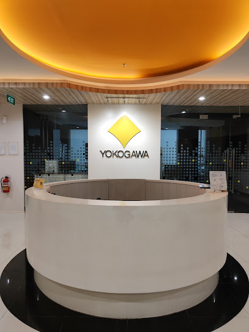

Training Center & Head Office
Jakarta
Plaza Oleos, 3rd Floor, Suite A–H, Jl. TB Simatupang Kav. 53, South Jakarta 12520
Phone +62 21 2971 2600
View on Maps
Have a question or need assistance? Get in touch with our team—we’re here to help.

Have a question or need assistance? Get in touch with our team—we’re here to help.
PT. Yokogawa Indonesia
Plaza Oleos 3rd Floor Suite A-H, Jl. TB Simatupang, RT.2/RW.1, Kebagusan, Pasar Minggu, South Jakarta City, Jakarta 12520
Senin - Jumat : 08:00 - 17:00

Connect with our training center and regional offices across Indonesia.
Markers show approximate locations; nearby pins are spaced for clarity.
Training Center & Head Office
Plaza Oleos, 3rd Floor, Suite A–H, Jl. TB Simatupang Kav. 53, South Jakarta 12520
Phone +62 21 2971 2600
View on MapsStaging Location
Intirub Business Park, Jl. Cililitan Besar No. 454, Jakarta 13650
Phone +62 21 2937 3405 / 3406
View on MapsStaging Location
Jl. Rawa Gelam 3 No. 8, Pulogadung, Jakarta 13930
Map pin shows an approximate area; the exact location needs confirmation.
View on MapsStaging Location
Komplek Pergudangan Taman Tekno, Blok L2 No. 1 & 2, Cisauk, Tangerang 15314
Phone +62 21 7568 2386
View on MapsBranch Office
Graha Sucofindo, 1st Floor, Jl. Achmad Yani No. 79, Pekanbaru, Riau 28115
Phone +62 761 856395
View on MapsBranch Office
Graha Sucofindo, 2nd Floor, Jl. Achmad Yani No. 106, Cilegon, Banten 42421
Phone +62 254 397206
View on MapsBranch Office
Grand Sudirman Balikpapan, 8th Floor, Suite 09, Jl. Jend. Sudirman No. 7, Balikpapan 76113
Phone +62 542 7219688
View on MapsBranch Office
Graha Pena, 8th Floor, Room 804, Jl. Achmad Yani No. 88, Surabaya 60234
Phone +62 31 8202132
View on MapsRepresentative Office
Grand City Hall Hotel, Ground Floor L-15, Jl. Balai Kota No. 1, Medan, North Sumatra 20112
Phone +62 61 4557000 ext. 8404
View on MapsService Representative
Luwuk, Banggai, Sulawesi 94713
View on Maps